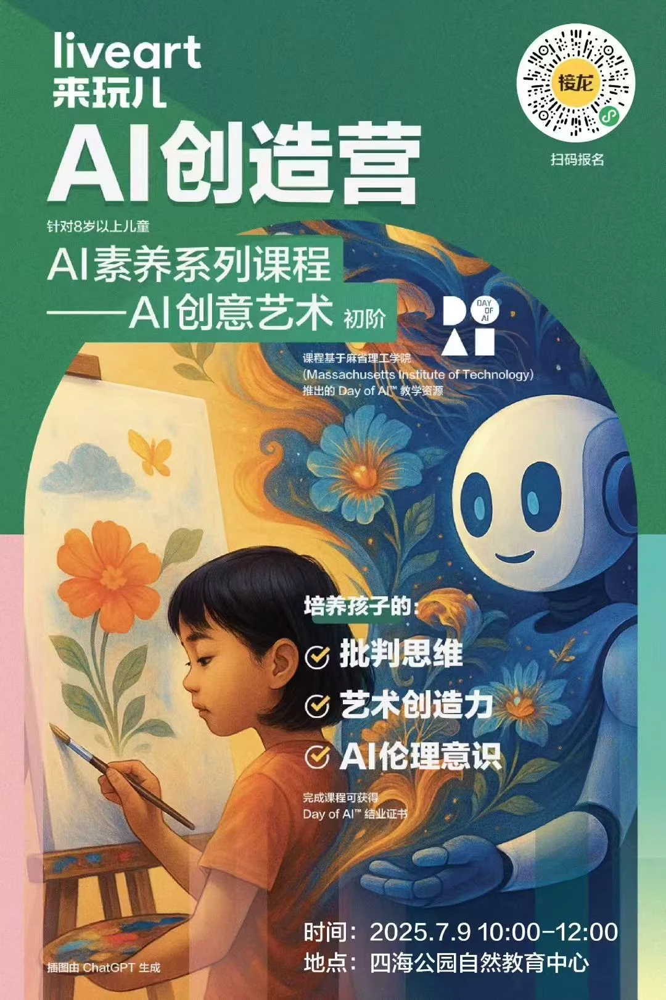
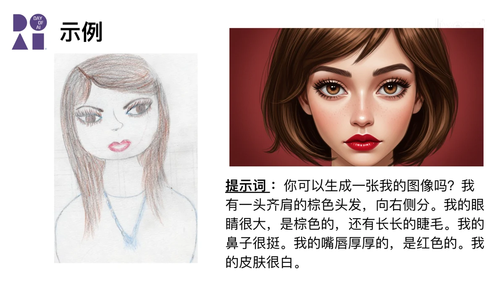

AI 素养 × 创意艺术
面向 8 岁以上儿童，将 AI 基础知识、艺术表达与伦理讨论串联在一次创作体验中。课程参考 Day of AI 教学资源，从“AI 是怎样学习的”出发，逐步走向自己的图像创作。
从理解 AI 到亲手创作，让好奇心变成自己的作品。


面向 8 岁以上儿童，将 AI 基础知识、艺术表达与伦理讨论串联在一次创作体验中。课程参考 Day of AI 教学资源，从“AI 是怎样学习的”出发，逐步走向自己的图像创作。
观察、手绘、描述、生成、比较：用自画像练习，让孩子把想法表达清楚，再观察 AI 如何理解和改变这些细节。创作过程中的选择，与最后的图像一样重要。

课堂讨论谁是作品的创作者、AI 会产生哪些偏见，以及如何看待生成内容。鼓励孩子提出自己的判断，把工具使用与批判性思考放在一起。
AI 基础与生成原理、AI 与艺术伦理、自画像创作与比较、作品分享与讨论。教学材料包括课程幻灯片、练习与反思任务。